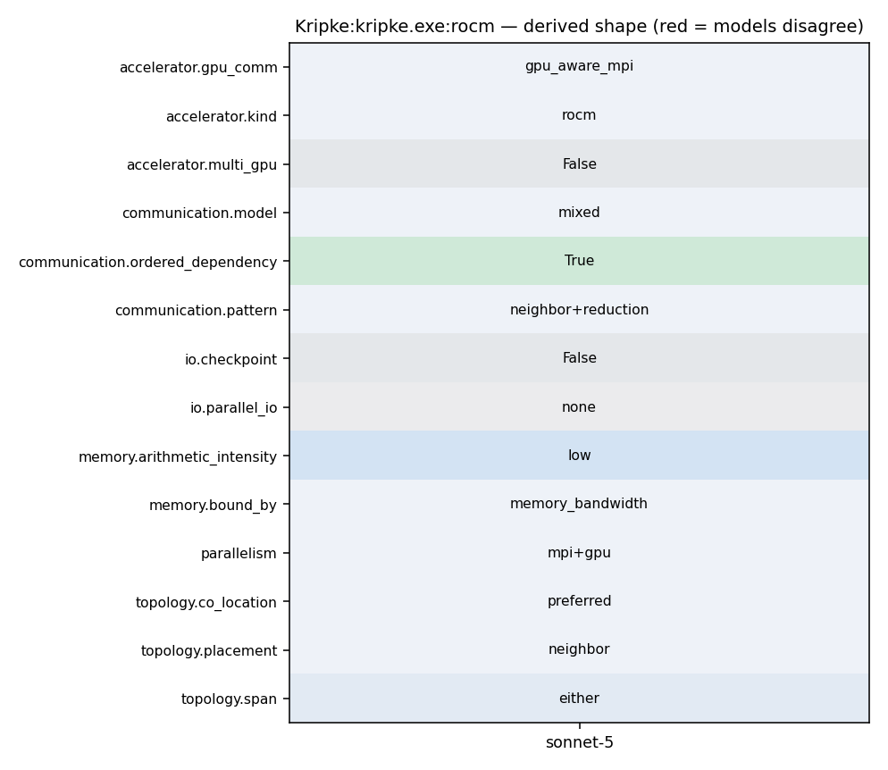

mpirun -np <N> ./bin/kripke.exe --procs px,py,pz --dset ds --gset gs --zset zx:zy:zz --arch CUDA
15 16 namespace { 17 18 bool useGpuAwareMPI(Kripke::Core::FieldStorage<double> &field) 19 { 20 #ifdef KRIPKE_USE_GPU_AWARE_MPI 21 return field.getAllocationSpace() == chai::GPU; 22 #else 23 (void)field; 24 return false; 25 #endif 26 } 27 28 void synchronizeDeviceForMPI(void) 29 {
311 set(KRIPKE_USE_MPI 1) 312 endif() 313 314 if(ENABLE_GPU_AWARE_MPI) 315 if(NOT (ENABLE_MPI OR ENABLE_MPI_WRAPPER)) 316 message(FATAL_ERROR "ENABLE_GPU_AWARE_MPI requires MPI. Enable either ENABLE_MPI=On or ENABLE_MPI_WRAPPER=On.") 317 endif() 318 if(NOT ENABLE_CHAI) 319 message(FATAL_ERROR "ENABLE_GPU_AWARE_MPI requires ENABLE_CHAI=On.") 320 endif() 321 if(NOT ENABLE_CUDA AND NOT ENABLE_HIP) 322 message(FATAL_ERROR "ENABLE_GPU_AWARE_MPI requires ENABLE_CUDA=On or ENABLE_HIP=On.") 323 endif() 324 set(KRIPKE_USE_GPU_AWARE_MPI 1) 325 endif() 326 327 328 #
134 using RAJA::statement::CudaSyncThreads; 135 #endif 136 137 #ifdef KRIPKE_USE_HIP 138 using RAJA::hip_exec; 139 using RAJA::hip_block_x_loop; 140 using RAJA::hip_block_y_loop; 141 using RAJA::hip_block_z_loop; 142 using hip_threadblock_x_direct = RAJA::hip_global_size_x_direct<32>; // blocks of 32 threads 143 using hip_threadblock_y_direct = RAJA::hip_global_size_y_direct<32>; // blocks of 32 threads 144 using hip_threadblock_z_direct = RAJA::hip_global_size_z_direct<32>; // blocks of 32 threads 145 using RAJA::hip_thread_x_loop; 146 using RAJA::hip_thread_y_loop; 147 using RAJA::hip_thread_z_loop; 148 using hip_thread_syncable_x_loop = RAJA::hip_thread_syncable_loop<RAJA::named_dim::x>; 149 using hip_thread_syncable_y_loop = RAJA::hip_thread_syncable_loop<RAJA::named_dim::y>;
29 set(GPU_TARGETS "gfx942" CACHE STRING "") 30 set(AMD_GPU_TARGETS "gfx942" CACHE STRING "") 31 32 set(ENABLE_CHAI On CACHE BOOL "") 33 set(ENABLE_HIP On CACHE BOOL "") 34 set(ENABLE_OPENMP Off CACHE BOOL "") 35 set(ENABLE_MPI On CACHE BOOL "") 36 37 #set(CMAKE_HIPCC_FLAGS_RELEASE "-O3 --expt-extended-lambda" CACHE STRING "") 38 #set(CMAKE_HIPCC_FLAGS_RELWITHDEBINFO "-O3 -lineinfo --expt-extended-lambda" CACHE STRING "")
171 GlobalSdomId global_sdom_id = local_to_global(sdom_id); 172 173 // Post the recieve 174 MPI_Irecv(plane_data_ptr, plane_data_size, MPI_DOUBLE, upwind_rank, 175 *global_sdom_id, MPI_COMM_WORLD, &recv_requests[recv_requests.size()-1]); 176 177 // increment number of dependencies 178 num_depends ++; 179 #else 180 // No MPI, so this doesn't make sense 181 KRIPKE_ASSERT("All comms should be on-node without MPI"); 182 #endif 183 } 184 185 // add subdomain to queue 186 queue_sdom_ids.push_back(*sdom_id); 187 queue_depends.push_back(num_depends); 188 } 189 190 void ParallelComm::postSends(Kripke::Core::DataStore &data_store, Kripke::SdomId sdom_id, 191 Kripke::Core::FieldStorage<double> *src_plane_data[3]) 192 { 193 // post sends for downwind dependencies 194 Kripke::Core::Comm comm;
121 RAJA_INLINE 122 long allReduceSumLong(long value) const { 123 #ifdef KRIPKE_USE_MPI 124 MPI_Allreduce(MPI_IN_PLACE, &value, 1, MPI_LONG, MPI_SUM, m_comm); 125 #endif 126 return value; 127 } 128 129 /** 130 * Allreduce SUM an array, in-place 131 * Without MPI, this is a NOP 132 */ 133 RAJA_INLINE 134 #ifdef KRIPKE_USE_MPI 135 void allReduceSumLong(long *value, size_t len) const { 136 MPI_Allreduce(MPI_IN_PLACE, value, len, MPI_LONG, MPI_SUM, m_comm); 137 } 138 #else 139 void allReduceSumLong(long *, size_t ) const {} 140 #endif 141 142 143 /** 144 * Allreduce SUM an array, in-place
260 261 Number of solver iterations to run. (Default: --niter 10) 262 263 * **``--pmethod <method>``** 264 265 Parallel solver method. "sweep" for full up-wind sweep (wavefront algorithm). "bj" for Block Jacobi. (Default: --pmethod sweep) 266 267 268
168 plane_data_ptr = plane_data.getHostData(sdom_id); 169 } 170 171 GlobalSdomId global_sdom_id = local_to_global(sdom_id); 172 173 // Post the recieve 174 MPI_Irecv(plane_data_ptr, plane_data_size, MPI_DOUBLE, upwind_rank, 175 *global_sdom_id, MPI_COMM_WORLD, &recv_requests[recv_requests.size()-1]); 176 177 // increment number of dependencies 178 num_depends ++; 179 #else 180 // No MPI, so this doesn't make sense
168 plane_data_ptr = plane_data.getHostData(sdom_id); 169 } 170 171 GlobalSdomId global_sdom_id = local_to_global(sdom_id); 172 173 // Post the recieve 174 MPI_Irecv(plane_data_ptr, plane_data_size, MPI_DOUBLE, upwind_rank, 175 *global_sdom_id, MPI_COMM_WORLD, &recv_requests[recv_requests.size()-1]); 176 177 // increment number of dependencies 178 num_depends ++; 179 #else 180 // No MPI, so this doesn't make sense 181 KRIPKE_ASSERT("All comms should be on-node without MPI"); 182 #endif 183 } 184 185 // add subdomain to queue 186 queue_sdom_ids.push_back(*sdom_id); 187 queue_depends.push_back(num_depends); 188 } 189 190 void ParallelComm::postSends(Kripke::Core::DataStore &data_store, Kripke::SdomId sdom_id, 191 Kripke::Core::FieldStorage<double> *src_plane_data[3])
260 261 Number of solver iterations to run. (Default: --niter 10) 262 263 * **``--pmethod <method>``** 264 265 Parallel solver method. "sweep" for full up-wind sweep (wavefront algorithm). "bj" for Block Jacobi. (Default: --pmethod sweep) 266 267 268
17 template<typename AL> 18 struct Policy_SweepSubdomains; 19 20 template<> 21 struct Policy_SweepSubdomains<ArchLayoutT<ArchT_Sequential, LayoutT_DGZ>> { 22 using ExecPolicy = 23 KernelPolicy< 24 For<0, seq_exec, // direction 25 For<1, seq_exec, // group 26 For<2, seq_exec, // k 27 For<3, seq_exec, // j 28 For<4, seq_exec, // i 29 Lambda<0> 30 > 31 > 32 > 33 > 34 > 35 >; 36 }; 37 38 39 template<> 40 struct Policy_SweepSubdomains<ArchLayoutT<ArchT_Sequential, LayoutT_DZG>> {
17 template<typename AL> 18 struct Policy_SweepSubdomains; 19 20 template<> 21 struct Policy_SweepSubdomains<ArchLayoutT<ArchT_Sequential, LayoutT_DGZ>> { 22 using ExecPolicy = 23 KernelPolicy< 24 For<0, seq_exec, // direction 25 For<1, seq_exec, // group 26 For<2, seq_exec, // k 27 For<3, seq_exec, // j 28 For<4, seq_exec, // i 29 Lambda<0> 30 > 31 > 32 > 33 > 34 > 35 >; 36 }; 37 38 39 template<> 40 struct Policy_SweepSubdomains<ArchLayoutT<ArchT_Sequential, LayoutT_DZG>> {
63 m_size(0) 64 { 65 int r, s; 66 MPI_Comm_rank(m_comm, &r); 67 MPI_Comm_size(m_comm, &s); 68 m_rank = r; 69 m_size = s; 70 } 71 72 RAJA_INLINE 73 Comm(MPI_Comm c) : 74 m_comm(c), 75 m_rank(0), 76 m_size(0) 77 { 78 int r, s; 79 MPI_Comm_rank(m_comm, &r); 80 MPI_Comm_size(m_comm, &s); 81 m_rank = r; 82 m_size = s; 83 }
134 using RAJA::statement::CudaSyncThreads; 135 #endif 136 137 #ifdef KRIPKE_USE_HIP 138 using RAJA::hip_exec; 139 using RAJA::hip_block_x_loop; 140 using RAJA::hip_block_y_loop; 141 using RAJA::hip_block_z_loop; 142 using hip_threadblock_x_direct = RAJA::hip_global_size_x_direct<32>; // blocks of 32 threads 143 using hip_threadblock_y_direct = RAJA::hip_global_size_y_direct<32>; // blocks of 32 threads 144 using hip_threadblock_z_direct = RAJA::hip_global_size_z_direct<32>; // blocks of 32 threads 145 using RAJA::hip_thread_x_loop; 146 using RAJA::hip_thread_y_loop; 147 using RAJA::hip_thread_z_loop; 148 using hip_thread_syncable_x_loop = RAJA::hip_thread_syncable_loop<RAJA::named_dim::x>; 149 using hip_thread_syncable_y_loop = RAJA::hip_thread_syncable_loop<RAJA::named_dim::y>;
15 16 namespace { 17 18 bool useGpuAwareMPI(Kripke::Core::FieldStorage<double> &field) 19 { 20 #ifdef KRIPKE_USE_GPU_AWARE_MPI 21 return field.getAllocationSpace() == chai::GPU; 22 #else 23 (void)field; 24 return false; 25 #endif 26 } 27 28 void synchronizeDeviceForMPI(void) 29 {
237 238 Layout of spatial subdomains over MPI ranks. 0 for "Blocked" where local zone sets represent adjacent regions of space. 1 for "Scattered" where adjacent regions of space are distributed to adjacent MPI ranks. (Default: --layout 0) 239 240 * **``--procs <npx,npy,npz>``** 241 242 Number of MPI ranks in each spatial dimension. (Default: --procs 1,1,1) 243 244 * **``--dset <ds>``** 245
168 plane_data_ptr = plane_data.getHostData(sdom_id); 169 } 170 171 GlobalSdomId global_sdom_id = local_to_global(sdom_id); 172 173 // Post the recieve 174 MPI_Irecv(plane_data_ptr, plane_data_size, MPI_DOUBLE, upwind_rank, 175 *global_sdom_id, MPI_COMM_WORLD, &recv_requests[recv_requests.size()-1]); 176 177 // increment number of dependencies 178 num_depends ++; 179 #else 180 // No MPI, so this doesn't make sense 181 KRIPKE_ASSERT("All comms should be on-node without MPI"); 182 #endif 183 } 184 185 // add subdomain to queue 186 queue_sdom_ids.push_back(*sdom_id); 187 queue_depends.push_back(num_depends); 188 } 189 190 void ParallelComm::postSends(Kripke::Core::DataStore &data_store, Kripke::SdomId sdom_id, 191 Kripke::Core::FieldStorage<double> *src_plane_data[3])
237 238 Layout of spatial subdomains over MPI ranks. 0 for "Blocked" where local zone sets represent adjacent regions of space. 1 for "Scattered" where adjacent regions of space are distributed to adjacent MPI ranks. (Default: --layout 0) 239 240 * **``--procs <npx,npy,npz>``** 241 242 Number of MPI ranks in each spatial dimension. (Default: --procs 1,1,1) 243 244 * **``--dset <ds>``** 245 246 Number of direction-sets. Must be a factor of 8, and divide evenly the number of quadrature points. (Default: --dset 8) 247 248 * **``--gset <gs>``** 249 250 Number of energy group-sets. Must divide evenly the number energy groups. (Default: --gset 1) 251 252 * **``--zset <zx>,<zy>,<zz>``** 253 254 Number of zone-sets in x, y, and z. (Default: --zset 1:1:1) 255 256 257 ### Solver Options: